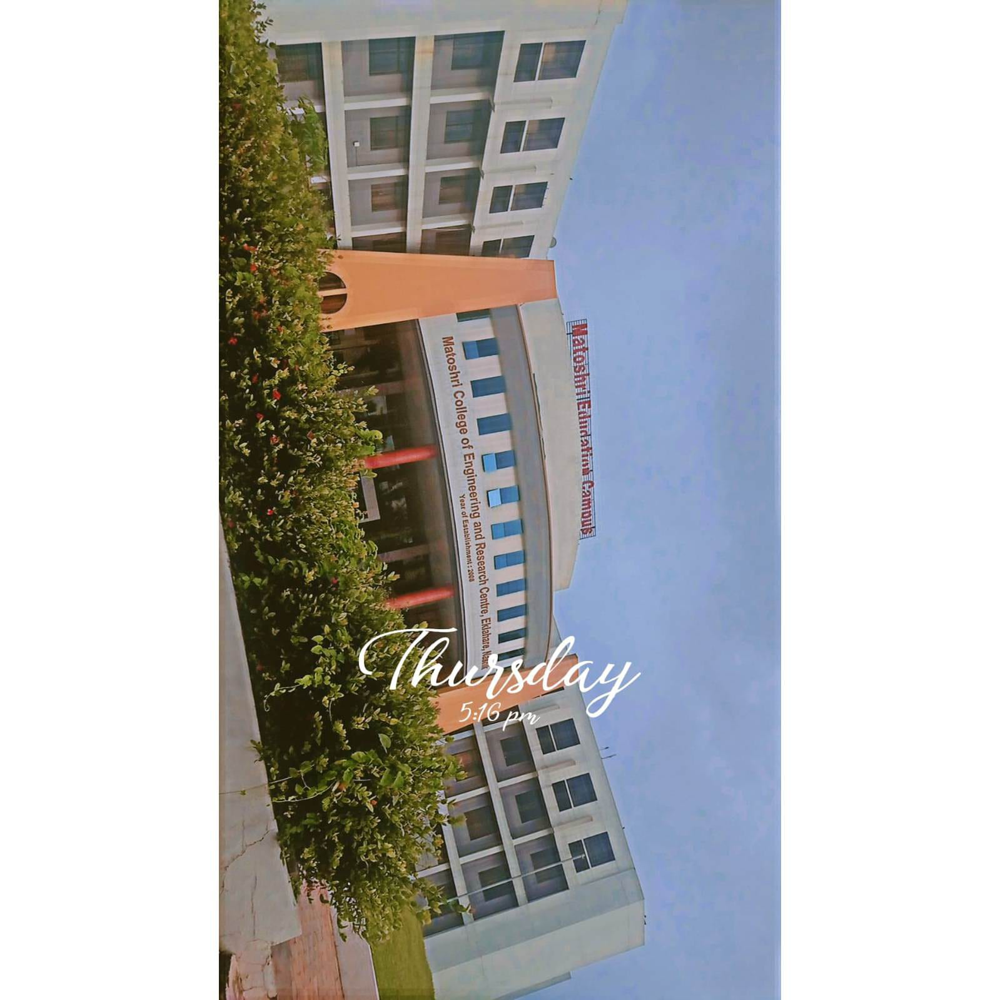
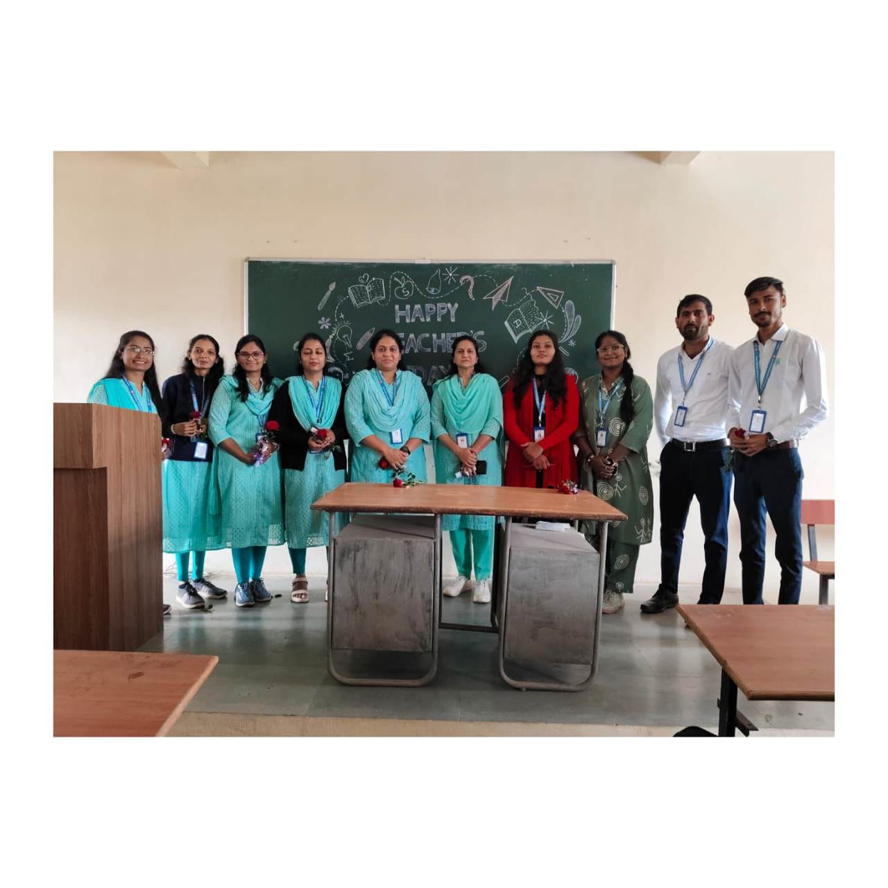
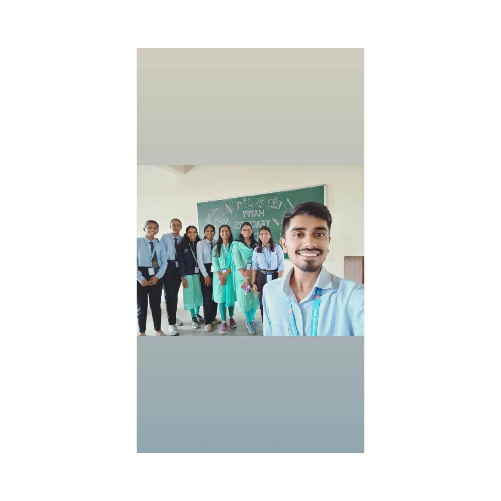

🌱 My MCA Journey
By Jayshri Nandkishor Gautam | MCA Student
By Jayshri Nandkishor Gautam | MCA Student
My name is Jayshri Nandkishor Gautam.
I am a student of MCA department at Matoshri College of Engineering and Research Center, Eklahare, Nashik.
Jab mai Gondia se Nashik aayi, tab mere liye sab kuch bilkul naya tha.
Naye log, naya shehar, nayi language — sab kuch ekdum alag tha.
Shuruaat me adjust karna mushkil tha, lekin dheere dheere maine khud ko adapt karna seekha.
Admission ke time maine socha tha ki mai yaha admission nahi karungi.
Yaha ki local language Marathi thi aur mujhe samajh nahi aati thi.
Mujhe laga ki mai yaha adjust nahi kar paungi.
Lekin usi waqt HOD ma’am ne mujhe samjhaya ki language kabhi barrier nahi hoti.
Unhone mujhe motivate kiya aur confidence diya.
Us moment ne meri soch badal di.
College ka environment disciplined hai.
Ye discipline gradually personality develop karta hai.
Nashik me mujhe jo log mile vo supportive rahe.
Academic activities ne mujhe consistency aur responsibility sikhayi.
Har din ek naya learning experience tha.
College me students ki safety ka bahut dhyan rakha jata hai.
Jab bhi mujhe ghar jana hota tha, mujhe ek leave form bharna padta tha.
Us par HOD aur Rector ki signature hoti thi.
Tabhi permission milti thi.
Mera safar Nashik se Gondia ka tha, jo ek din ka hota tha.
Next day meri class teacher ka call aata tha.
Wo poochti thi ki mai safely pahochi ya nahi.
Parents se bhi baat karti thi.
Ye sab dekh kar mujhe bahut secure feel hota tha.
HOD ma’am: Unka nature strict hai.
Kabhi kabhi wo mujhe daant deti thi.
Us waqt mujhe gussa aata tha.
Lekin baad me samajh aaya ki wo sab mere bhale ke liye tha.
Wo jhut turant pakad leti thi.
BHAD ma’am: BHAD ma’am thodi strict thi, lekin unhone hamesha mujhe support kiya. Jab bhi mai udaas ya lonely feel karti thi, wo bina bole hi meri situation samajh leti thi. Unki ek khas baat ye thi ki wo sirf padhati hi nahi thi, balki students ke emotions bhi samajhti thi.
Wo hume first year me AI padhati thi, aur kabhi kabhi lagta tha ki unka mind bhi AI jaisa hi hai — bina kuch kahe hi wo meri baate samajh leti thi aur mujhe sahi direction me guide karti thi. Unka support mere liye bahut valuable tha.
Priyanka ma’am: Unka teaching style bahut clear hai.
Wo hard topics ko easy bana deti hai.
Is wajah se learning easy ho jati hai.
Kute ma’am: Kute ma’am meri mentor thi. Jab bhi mujhe hostel ya college se related koi problem hoti thi, wo use patiently sunti aur uska solution deti thi. Unka support aur guidance har situation me mere liye ek strong support system jaisa tha, jisse mujhe kabhi akela feel nahi hua.
Yogesh sir: Yogesh sir bahut friendly aur interactive teacher hai. Wo class me mujhe kabhi akela feel nahi hone dete the. Wo hamesha mujhse baat karte the aur mujhe involve karte the, jiski wajah se mera confidence dheere dheere build hua aur mai class me comfortable feel karne lagi.
Shivani ma’am & Pravin sir: Dono supportive hai.
Mere hisaab se college tabhi accha hota hai jab leadership strong ho.
Principal sir disciplined hai.
Unke liye rule matlab rule hai.
Isi wajah se college bhi disciplined hai.
Yeh journey sirf academics tak limited nahi thi.
Maine confidence develop kiya.
Maine challenges face karna seekha.
Har experience ne mujhe strong banaya.



Mai apni skills improve karna chahti hu.
Mai IT field me grow karna chahti hu.
Mai apni ek identity banana chahti hu.
Matoshri College mere liye ek important phase raha hai.
Yaha maine sirf padhai nahi ki.
Maine apni personality develop ki.
Yeh journey meri life ka strong foundation ban gayi hai.